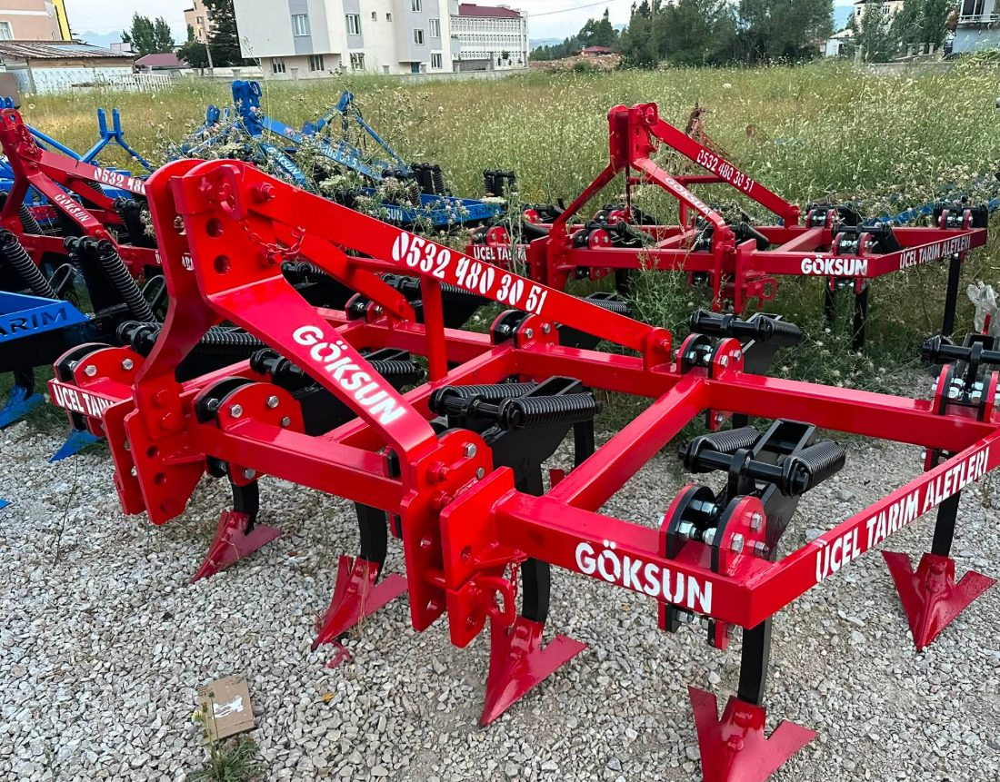
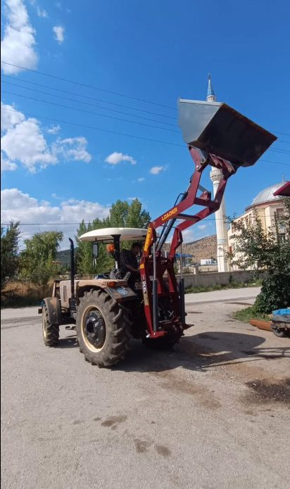
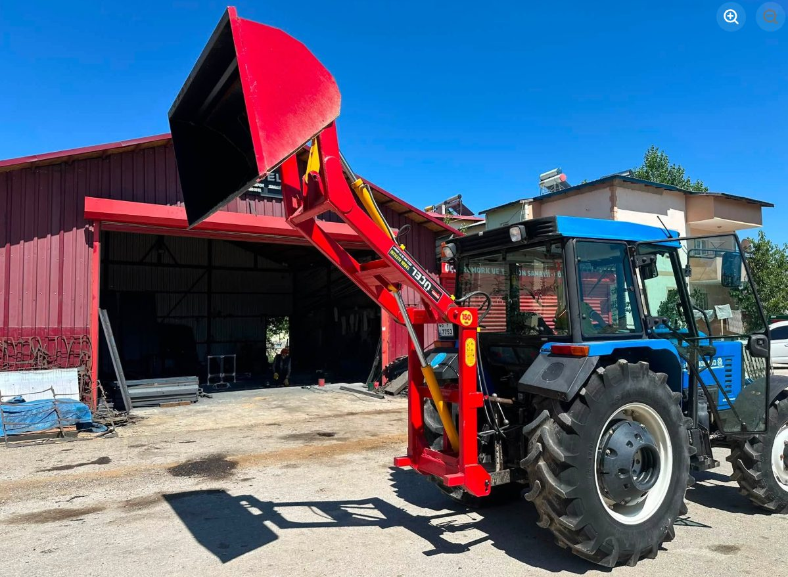

Sahadan Kareler
Konuşan Değil,
Üreten Bir Atölye
Göksun Sanayi Sitesi'ndeki atölyemizden ve tarlaya çıkan ekipmanlarımızdan gerçek kareler.
 Kendi İmalatımız Römork
Kendi İmalatımız Römork

Kültivatör Pulluk
Pulluk
 Su Tankeri ve Gübre Serpme
Su Tankeri ve Gübre Serpme

Ön Yükleyici (Loader)
Atölyemizden Sağlam İşçilik
Sağlam İşçilik